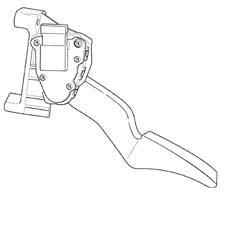

1068AB Check operation of accelerator pedal potentiometer
- Path
- Test > 10 ENGINE UNIT > 1068 ACCELERATOR CONTROLS > 1068A accelerator pedal control > 1068AB Check operation of accelerator pedal potentiometer
- Kind
- test / check procedure
- Applies to
- engines: 1.3 JTD 16v; all production periods
- Interactive page
- https://sloeber94.github.io/elrnDB-fPnd/en/#/2753420
Applies to: engines: 1.3 JTD 16v; all production periods
Check that the technical specifications of the accelerator pedal position sensor correspond to the data listed below:

Applies to: engines: 1.3 JTD 16v; all production periods
Bosch sensor technical specifications:
- Supply voltage: 5V ± 0.3 V
- Resistance at potentiometer slide terminals: 1 kOhm ± 0.4 kOhm
- Track 1 resistance: 1.2 KO ± 0.4 KO
- Track 2 resistance: 1.7 KO ± 0.8 KO
Hella sensor technical specifications:
- Supply voltage: 5V ± 0.3 V
- Resistance at potentiometer slide terminals: 1 kOhm ± 0.4 kOhm
- Track 1 resistance: 0.9 KOhm ± 35% …..1.4 KOhm ± 35%
- Track 2 resistance: 1.2 KOhm ± 35% …..2.0 KOhm ± 35%
Pin 1, description: track 2 supply, signal type: 5V input.
Pin 2, description: track 1 supply, signal type: 5V input.
Pin 3, description: track 1 earth, signal type: earth.
Pin 4, description: track 1 signal, signal type: analogue output.
Pin 5, description: track 2 earth, signal type: earth.
Pin 6, description: track 2 signal, signal type: analogue output.